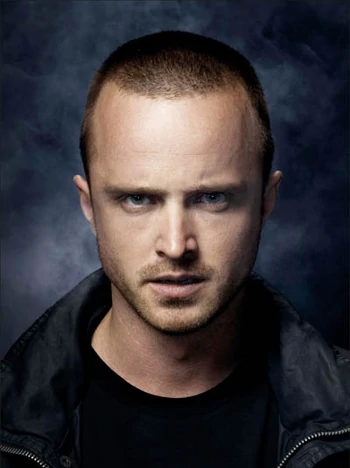
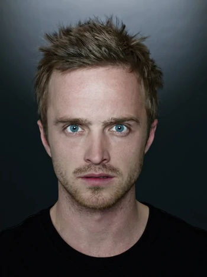
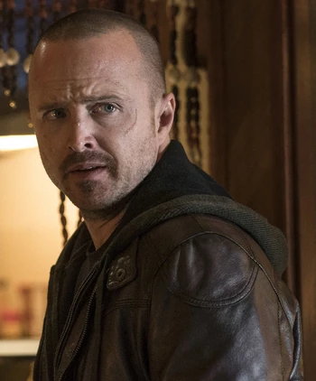

Jesse Pinkman
In deze pagina leg ik uit over wie Jesse Pinkman is en wat hij heeft gedaan.
Jesse Bruce Pinkman, ook bekend onder zijn clandestiene pseudoniem en bedrijfsnaam Cap'n Cook, is een voormalig chemicus, fabrikant en distributeur die werkte in Albuquerque, New Mexico, momenteel woonachtig in Haines, Alaska. Jesse was oorspronkelijk een low-level methamfetamine-dealer die samenwerkte met zijn vriend en collega-meth-kok Emilio Koyama. Hij is vooral bekend als de voormalige zaken- en meth-kokpartner van zijn voormalige scheikundeleraar Walter White, die twee jaar samenwerkte met Walt om hem te helpen bij het maken van chemisch zuivere kristalmethamfetamine zodat Walt na zijn dood voor zijn gezin (zijn vrouw Skyler, zoon Walt Jr. en dochtertje Holly) kon zorgen. Naast het katalyseren van Walt's drugsimperium en de op één na grootste speler daarin na Walt zelf, was Jesse ook de leider van een kortstondige meth-distributieketen waar zijn vrienden en mede-meth-distributeurs ook deel van uitmaakten.

Jesse werd geboren in een gezin uit de hogere middenklasse in Albuquerque (bestaande uit zijn vader Adam, moeder Diane, broer Jake en tante Ginny)
, maar zijn relatie met zijn ouders zou vaak gespannen raken door zijn frequente drugsgebruik, wat later resulteerde in in Jesse die uit het huis van
Pinkman wordt gezet. Op de middelbare school was Jesse een onverschillige student in de scheikundeles van Walt aan de J.P. Wynne High School, hoewel
hij ondanks zijn slechte academische status toch kon afstuderen en een diploma ontving. Tijdens zijn volwassenheid werd Jesse impulsief en
hedonistisch, maar was financieel ambitieus en streetwise. Hij praatte in speels jargon, speelde videogames, luisterde naar rap- en rockmuziek,
nam recreatieve drugs en reed lowriders. Zijn beste vrienden in Albuquerque waren mede-kleine drugsgebruikers en dealers Skinny Pete, Brandon
"Badger" Mayhew en Christian "Combo" Ortega. Jesse werkte als een kleine meth-dealer en -distributeur met Emilio en zijn neef Domingo "Krazy-8"
Molina voordat hij werd aangenomen door Walt, die op dat moment niets wist van de drugshandel in Albuquerque, om de meth die hij produceerde te
verkopen.
Walts wetenschappelijke kennis en toewijding aan kwaliteit hebben hem en Jesse ertoe gebracht crystal meth te produceren die zuiverder en krachtiger
is dan die van de concurrenten. Om de vervelende verzameling pseudo-efedrine die nodig is voor de productie te vermijden, bedenken Jesse en Walt
een alternatief chemisch proces waarbij methylamine wordt gebruikt, waardoor hun product een opvallende blauwe kleur krijgt. Hun crystal meth, die
de straatnaam "Blue Sky" krijgt, domineert de markt, wat leidt tot confrontaties met gevestigde drugsfabrikanten en -dealers. Hoewel Jesse en Walt
begonnen als amateur-meth-koks, de drug vervaardigden vanuit een camper in de woestijnen van New Mexico, en met zeer beperkt succes, klommen Jesse
en Walt al snel op in de drugshiërarchie, waarbij ze iedereen vermoordden of systematisch vernietigden. die hen belemmerde. Als resultaat van zijn
tweejarige samenwerking met Walt, werd Jesse een uitstekende meth-kok, waarbij Walt met tegenzin zei dat Jesse's meth net zo goed was als de zijne
Schrader, de lokale bendes en de Mexicaanse drugskartels (inclusief de regionale distributeurs van hem en Walt), hun leven op het spel zetten.

Ondanks zijn criminele levensstijl bleef Jesse tijdens hun criminele carrière veel empathischer dan Walt. Terwijl Walt ondergedompeld raakte in de drugshandel en zich had ontwikkeld tot een meedogenloze drugsbaron, grotendeels gemotiveerd door ijdelheid, ego en hebzucht (onder het aannemen van het clandestiene pseudoniem en de zakelijke naam "Heisenberg" terwijl hij zich onderdompelde in de drugshandel), was Jesse vaak geschokt door de brutaliteit op de hogere niveaus van de drugshandel, en was geschokt door Walts transformatie van een sympathieke low-level dealer naar een meedogenloze drugsbaron, en vertelde hem eens dat een meth-imperium niet iets was om trots op te zijn. Hij is erg beschermend naar kinderen toe en kan heel goed met ze omgaan.; zijn wens om kinderen uit de gewelddadige drugswereld te houden, leidde tot een aantal belangrijke gebeurtenissen in de criminele carrières van hem en Walt. De gewelddadige aard van de drugshandel en de moord op een onschuldige tiener leidde ertoe dat Jesse de drugshandel in 2010 verliet, Albuquerque verliet en het jaar daarop met succes naar Alaska vluchtte.